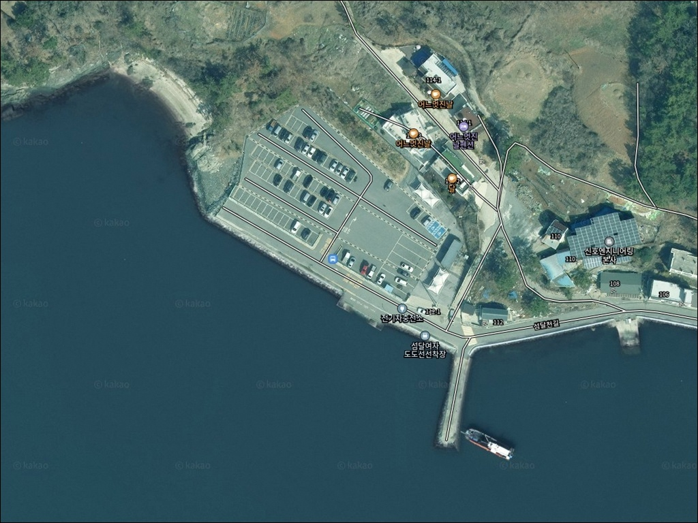
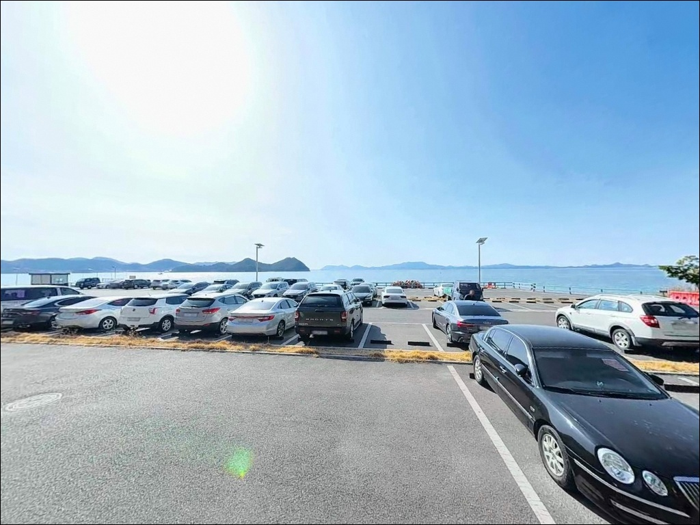
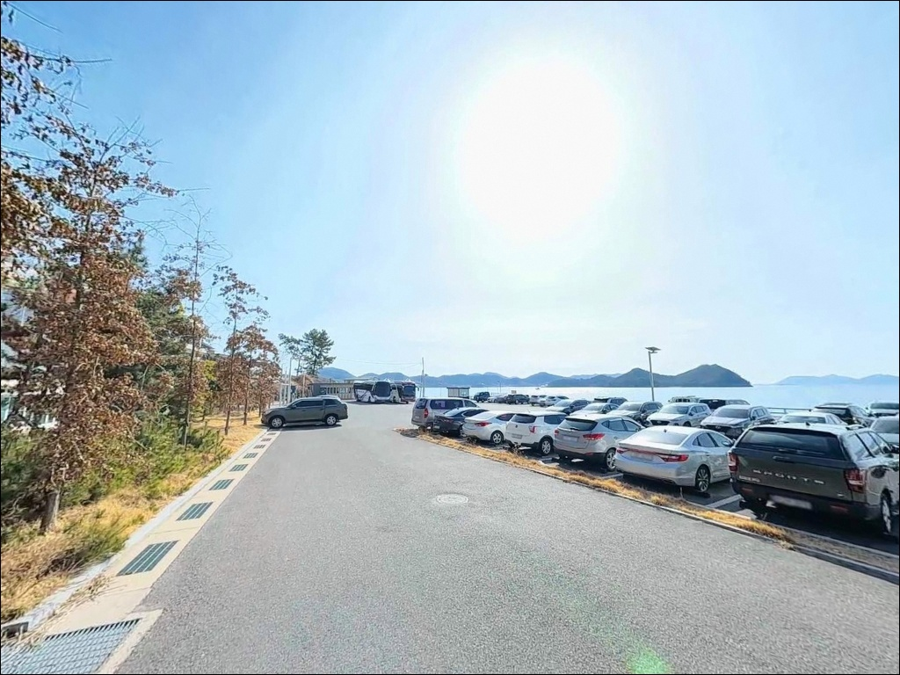
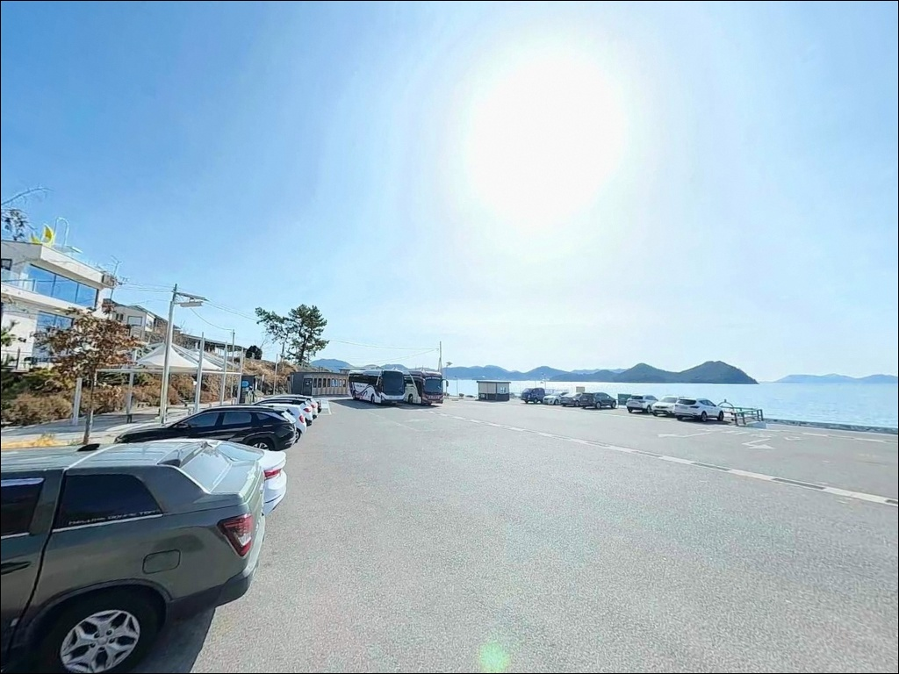
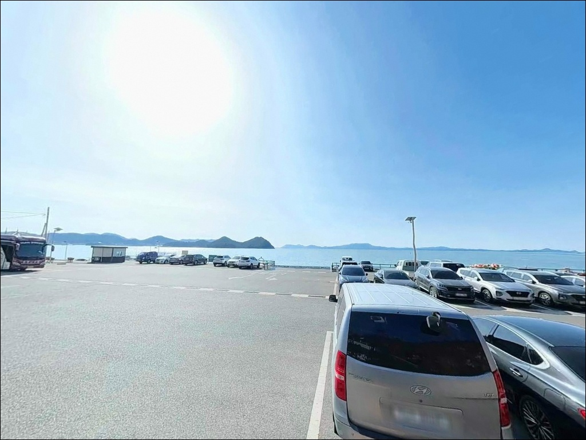
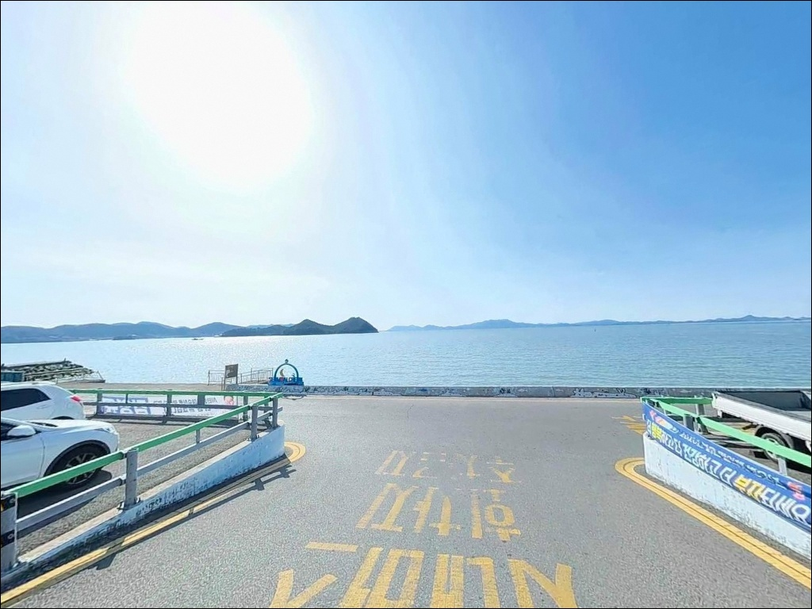
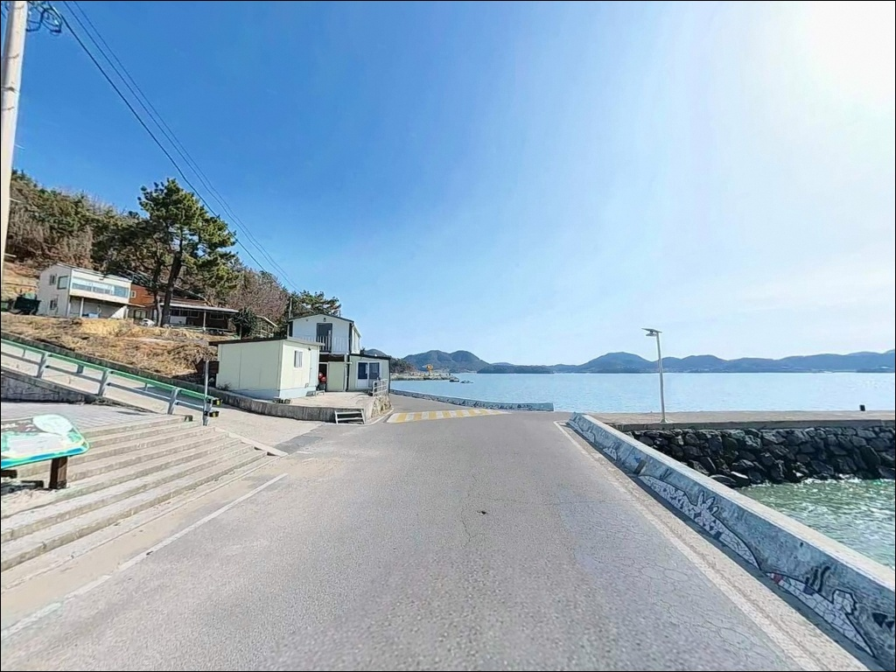
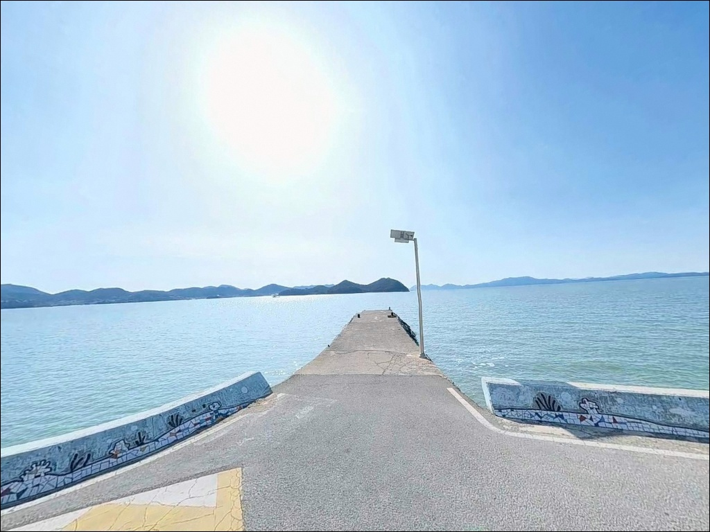
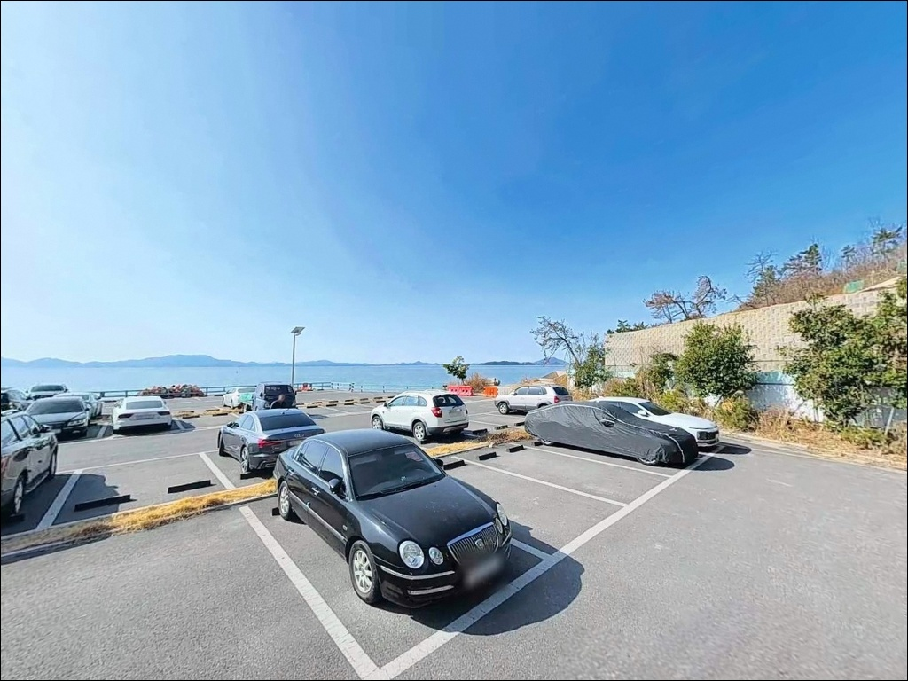

간조에 바닥 드러나는 여수 섬달천선착장, 만조 전후 3시간에 터진 붕장어 입질
이 페이지에는 광고(제휴 링크 포함)가 있으며, 광고 링크를 통해 구매하면 운영자가 판매 수익 또는 수수료를 받을 수 있습니다. 포인트 사진: 카카오맵 스카이뷰·로드뷰. 이 페이지의 지도·사진 이미지는 카카오맵의 실제 서비스 이미지와 다를 수 있습니다.


포인트 안내
섬달여자도도선선착장
전남 여수시 소라면 복산리 2086-16
간조 때 갯벌이 광범위하게 드러나는 여자만 내해에서
물때 계산 없이 진입하면
채비가 닿는 자리 자체가 사라집니다.
이 포인트는 만조 전후 2~3시간을
제대로 잡아야 비로소
원투 채비가 자리를 잡는 구조입니다.
이 글은 섬달여자도도선선착장의
진입 여건, 물때 판단 기준,
낚시 방식별 조건, 도선 활용 옵션에 집중합니다.
조황 단정이나 특정 어종 보장은
이 글의 범위에 포함되지 않습니다.

1. 진입 동선과 포인트 접근성
소라면 복산리에서 달천교를 건너면
달천도 해안도로가 이어집니다.
해안도로는 포장된 2차선 수준의 도로로,
일반 승용차와 SUV 모두 진입·교행이 가능합니다.
도로 종점 부근에 선착장과 주차장이 붙어 있어
길 찾기가 단순한 구조입니다.
주차는 선착장 앞 넓은 무료 공터를 이용하는 방식이 기본입니다.
시내버스가 이 주차장에서 회차할 정도의 면적이 확보되어 있어,
야간 차박 차량도 여유 있게 배치할 수 있는 편입니다.
대형 캠핑카를 포함한 차량도
회차 공간 부족 걱정 없이 진입할 수 있는 구조입니다.
선착장 발판은 콘크리트 위주의 평탄한 구조이며,
테트라포트 지형은 이 선착장에서 확인되지 않습니다.
야간에는 방파제 석축과 선착장 가장자리가
미끄러울 수 있으므로
안전화와 구명조끼는 기본 장비입니다.

2. 차박 환경과 야간 체류 여건
선착장 앞 넓은 무료 주차장은
차박 기반으로는 이 포인트의 가장 큰 장점입니다.
평탄한 포장 공간에 차량을 세우면
바로 앞으로 여자만 내해가 펼쳐지는 구조이며,
차박 차량의 배치와 방향 조정이 자유로운 편입니다.
선착장 도선 마지막 편 이후에는
통행 차량이 거의 없어 야간은 조용합니다.
선착장 주변에는 기본 가로등과 시설 조명이 설치되어 있어
완전 암흑 구간은 아닙니다.
달커피를 비롯한 카페가 선착장 인근에 영업 중이라
낮 시간대 방문객이 있는 편이지만,
야간에는 조용히 가라앉는 분위기입니다.
다만 선착장 발판 구역은
야간 조명이 충분하지 않아
헤드랜턴은 반드시 챙겨야 합니다.
여자만 내해는 외해 직격 파도 영향이 없는
완전한 내만형 지형입니다.
차 안에서 파도 소음 없이 쉴 수 있는 환경이며,
바람 영향도 사리 전후를 제외하면
크지 않은 편입니다.
단, 달천도 섬 자체에 편의점이 없으므로
식수·식품·낚시 소품은 육지에서 완비하고 진입해야 합니다.


3. 주변 편의시설 및 인프라 현황
선착장 바로 인접한 달커피를 포함해
도선장 앞에 바다 조망 카페가 여러 곳 영업 중입니다.
선착장 부근에는 음료와 간단한 낚시용품을 판매하는
소규모 낚시점도 운영됩니다.
선착장 인근 주차장에는
공중화장실이 설치되어 있습니다.
편의점과 마트는 달천교를 건너
소라면 죽림리·봉전리 방면으로
차량으로 15~20분 거리에 위치합니다.
이 구간으로 나가면 식당과 주유소 등
기본 생활 인프라가 이어집니다.
응급 상황에 대비해 여수 시내권은
차량으로 약 20분 거리로 대형 병원과 약국을 이용할 수 있습니다.

4. 진입 전 반드시 챙겨야 할 준비사항
섬달여자도도선선착장 방문 전에 가장 먼저 확인할 것은
물때입니다.
여자만 전역이 갯벌이 발달한 내해로,
간조 전후에는 선착장 앞 수역도 바닥이 드러나는 구간이 생깁니다.
바다타임에서 소라면 기준 물때를 확인하고
만조 전후 2~3시간을 낚시 타이밍으로 잡는 것이
이 포인트의 기본 공략법입니다.
도선을 이용해 여자도 낚시를 계획 중이라면
운항 시간을 반드시 사전에 확인해야 합니다.
마지막 귀환 편 시각을 놓치면
섬에 고립되는 상황이 발생합니다.
도선은 매월 셋째 주 화요일에 휴무이며,
여수 시내버스 도착 시각에 맞춰 출발하는 방식으로 운영됩니다.
원투 채비 공략 시 갯벌 바닥에서 채비 손실이 있는 편이므로
여분 채비를 넉넉하게 준비하는 것이 좋습니다.
야간 붕장어 낚시를 겸할 경우
청갯지렁이 미끼와 구명조끼, 헤드랜턴은
출조 전 필수 점검 항목입니다.

5. 물때 조건이 조과를 결정하는 지형 분석
섬달여자도도선선착장은 여자만 내해에 면한
소형 어항입니다.
공식 등록 기준 방파제 3기(26m·46m·20m)와
선착장 129m, 도선장 20m가 갖춰진 구조로,
외항 노출 방향은 여자도 방면 서쪽입니다.
전면에 파도를 막을 지형이 없지만
여자만 내해 자체가 외해 파도를 차단하는 구조이므로
수면은 늘 잔잔한 편입니다.
수심은 방파제 끝단 기준 만조 시 3~5m 수준입니다.
선착장 앞 수역은 도선 운항을 위한 준설 수역으로
일정 수심이 확보되어 있으며,
해안선 양측으로는 갯벌과 완만한 사니질 혼합 지형이 이어집니다.
수심이 급변하는 구간은
방파제 끝단 외항 쪽에 형성됩니다.
갯벌 바닥이 넓게 분포하는 지형 특성상
원투 채비를 바닥에 내리는 방식이
이 포인트에서 가장 현실적인 공략법입니다.
밑걸림이 크지 않은 갯벌 구간을 노리되,
간조 시 갯벌이 드러나는 범위를 먼저 확인하고 자리를 잡는 것이
조과의 기본 조건입니다.
출조 전 소라면 일대 최신 조황 검색을 먼저 해보시는 편이 좋습니다.


6. 지형에 맞는 낚시 스타일과 도선 활용 전략
이 포인트에서 가장 현실적인 낚시는
만조 전후 원투낚시입니다.
갯벌 혼합 바닥과 3~5m 수심에서
붕장어, 보구치, 숭어, 도다리 등을
기대해볼 수 있는 구조입니다.
방파제 끝단 외항 방향으로
채비를 멀리 보내 바닥층을 탐색하는 방식이 기본입니다.
야간에는 붕장어 낚시를 노려볼 수 있습니다.
여자만 내해 갯벌 환경에서 야간 붕장어 활성도가 높은 패턴이
이 일대 해역에서 형성됩니다.
청갯지렁이 미끼를 활용한 원투~중투 채비를
선착장 발판 가장자리와 방파제 석축 가까이에
내리는 방식이 유효합니다.
선착장 발판에서 찌낚시로
볼락, 전갱이, 망둥어 등 소형 어종을 노려볼 수 있습니다.
도선이 운항하지 않는 시간대에 한해
선착장 가장자리 라인을 탐색하는 방식입니다.
여자만 내해 특성상 조류가 약해
채비 안정성이 높은 편이라
가족 단위 생활낚시에도 적합한 조건입니다.
이 포인트의 핵심 옵션은 도선 활용입니다.
섬달천 선착장에서 여자도 도선을 이용하면
여자도 붕장어 다리와 갯바위 포인트로 이동할 수 있습니다.
송여자도까지 약 20분, 대여자도까지 추가 10~15분이 소요되며
편도 요금은 5,000원입니다.
여자도 내 인도교(붕장어 다리)는
다리 위에서 낚싯대를 세울 수 있는 구조로,
가을~초겨울 붕장어 시즌에 낚시인이 집중되는 곳입니다.

7. 대안 포인트와 플랜 B 동선
섬달천 선착장 낚시 조건이 여의치 않을 경우
첫 번째 대안은 달천도 해안도로를 따라 이어지는
소규모 선착장과 갯벌 가장자리 구간입니다.
같은 달천도 해안선에 있어
이동 거리가 짧고, 비슷한 수준의
생활낚시 여건을 갖추고 있습니다.
달천교를 건너 소라면 해안도로를 따라
가사리 방면으로 이동하면
비슷한 내만형 지형의 방파제를 이용할 수 있습니다.
차량으로 10분 내외 거리이며,
섬달천 선착장과 낚시 방식이 겹치지 않는 포인트를
추가 탐색하기 좋은 동선입니다.
소라면·화정면 일대에는
여자도 이외에도 여러 섬 연안 선착장이
분포해 대체 포인트 선택지가 넓습니다.
차박 조건이 맞지 않을 경우
소라면 장척·복촌 해안도로 구간으로 이동하면
여자만 갯벌 노을 뷰와 함께
도로변 공간이 상대적으로 넓은 노지 차박 후보지가 있습니다.
섬달천에서 차량으로 약 8~10km 거리입니다.

여자만 내만 조건을 이해하면
섬달천 선착장이 달리 보입니다
원투낚시와 야간 붕장어 낚시를
조용한 환경에서 즐기는 낚시인이라면
섬달천 선착장의 지형 조건은
잘 맞는 구조입니다.
갯벌 혼합 바닥과 만조 전후 수심이
원투 채비가 자리를 잡을 수 있는 조건을 만들고,
야간에는 붕장어 활성도를 기대해볼 수 있는
내만 환경이 갖춰져 있습니다.
반면 물때 확인 없이 진입하거나
간조 전후를 노리면
채비를 내릴 수심이 형성되지 않는 상황을
맞닥뜨릴 수 있습니다.
물때 확인, 도선 시간 사전 확인, 완전 자급 준비,
이 세 가지를 갖추고 가면
기대에 맞는 출조가 될 수 있는 곳입니다.
도선을 활용해 여자도까지 이동할 여건이 된다면
섬달천 선착장은 낚시 베이스캠프로서의 가치가 배가됩니다.
넓은 주차장에 차를 세우고 하룻밤 머물며
다음 날 도선을 타고 여자도 붕장어 다리로 향하는 일정은,
차박과 낚시를 함께 즐기는 낚시인에게
하나의 완성된 여정이 됩니다.